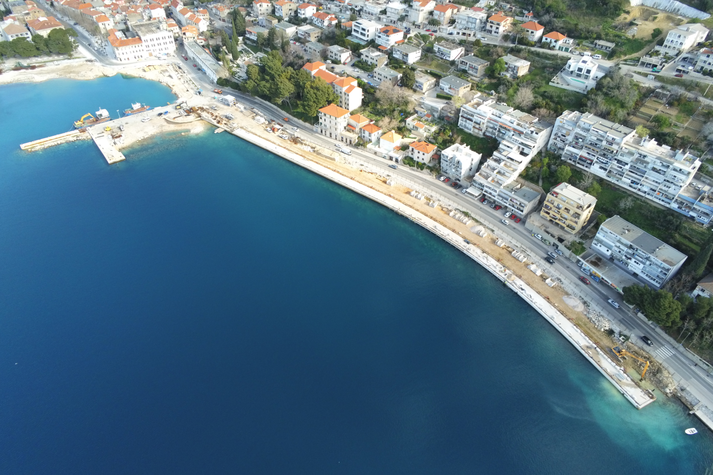
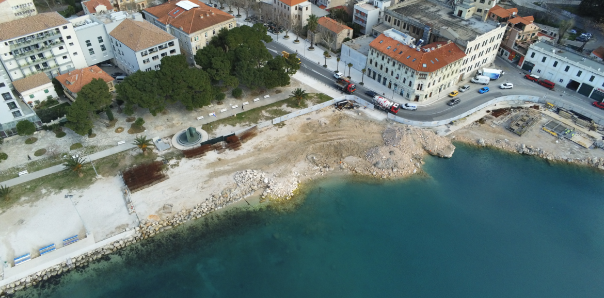
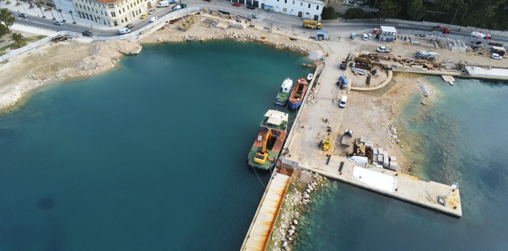
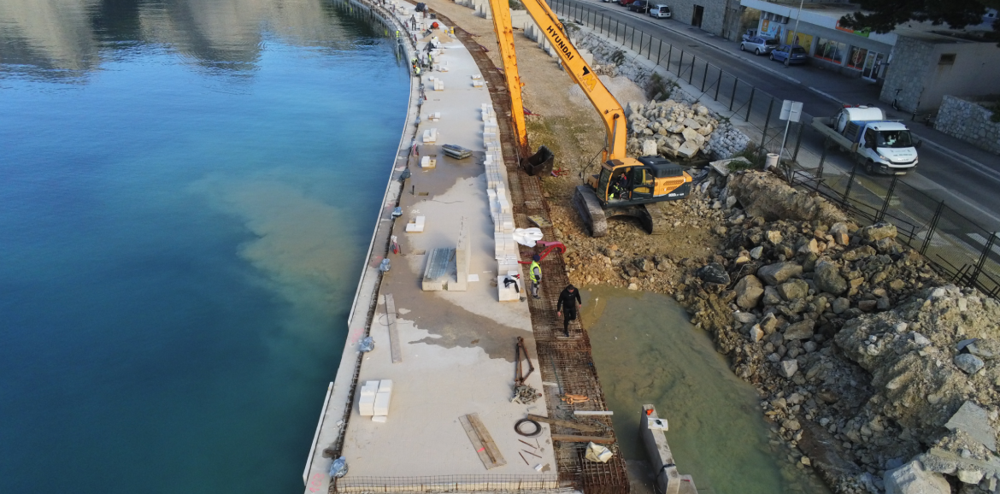
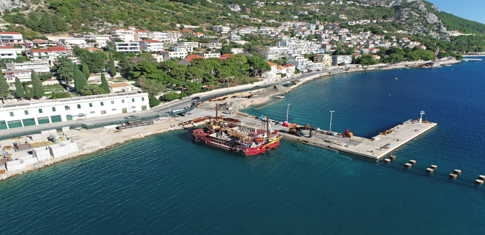
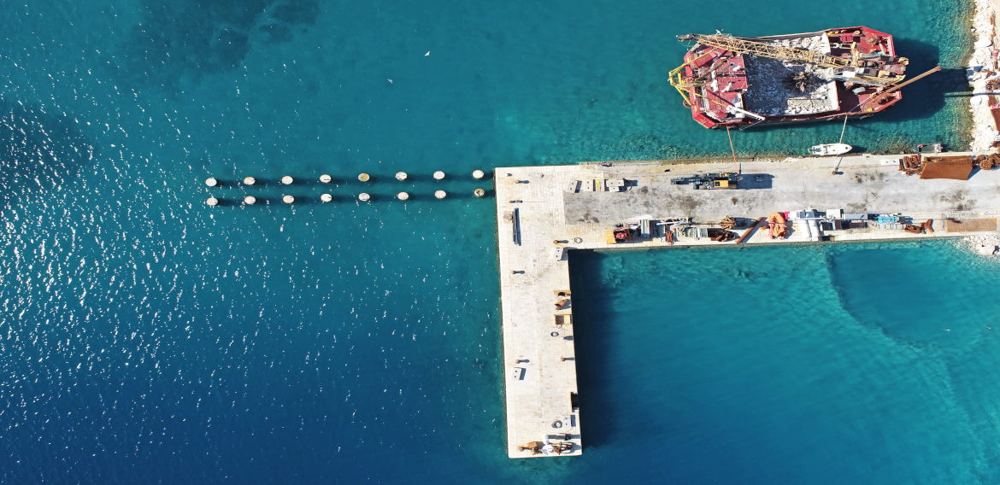
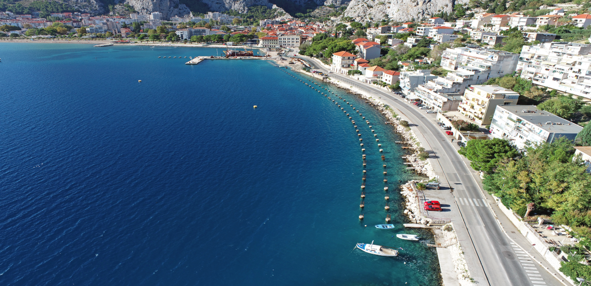
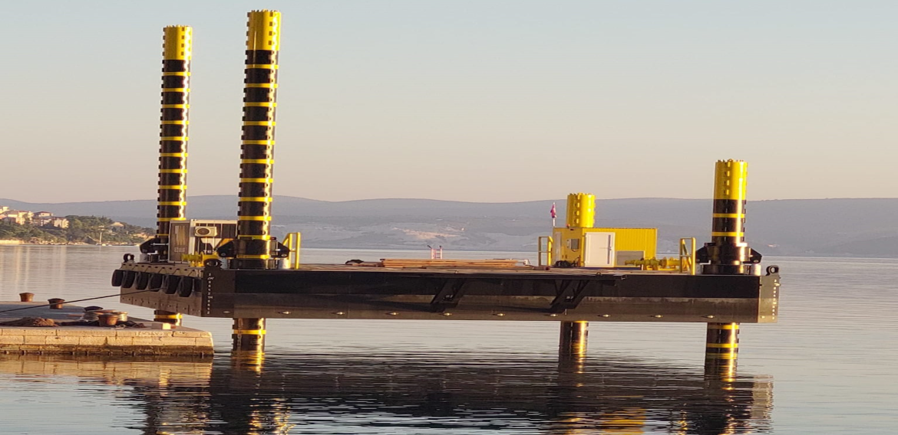
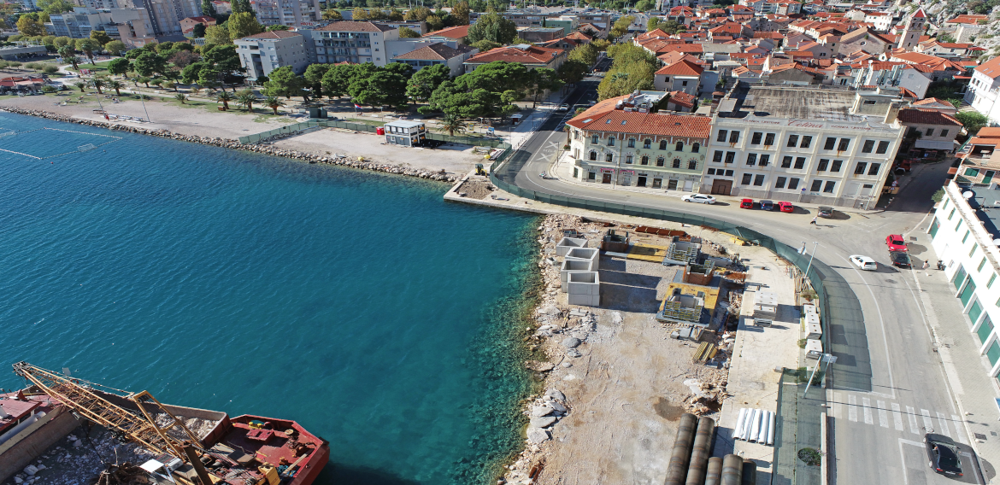
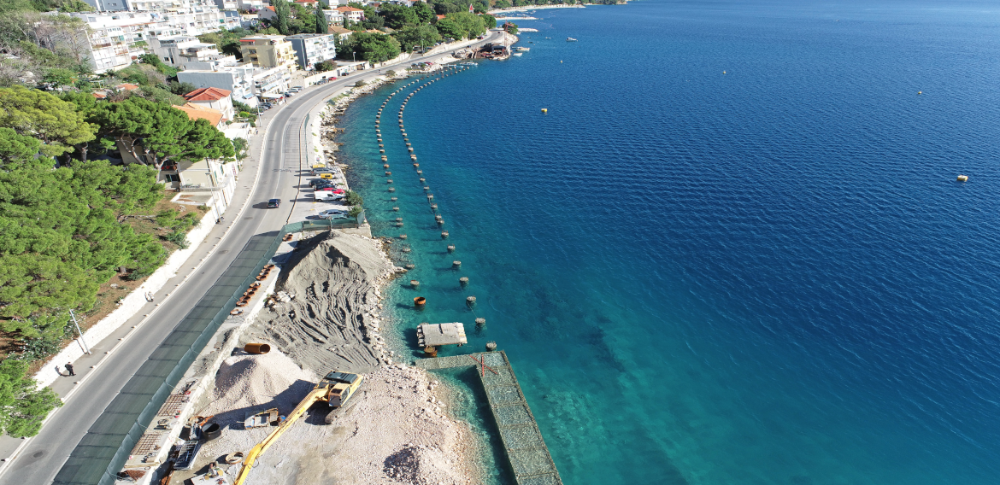

Omiš arrangement of the port open to public traffic

-
Name of the project
Omiš – arrangement of the port open to public traffic
-
Investor
Port Authority Splitsko-dalmatinske županije
-
Construction duration
Commencement date: September 2021.
Completion date: - -
Location
Omiš
Project details
The project involves the arrangement of the port open to public traffic, encompassing the following construction works:
- Construction of the new coastal line A
- Construction of the new coastal line B
- Remediation of the existing jetty
- Extension of the existing jetty (coastal line C)
- Expansion of the sea part, designated as the "N building" which includes additional construction segments such as the new coastal line A, coastal line B, the extension of the existing jetty (coastal line C), and coastal line D. The total floor area of this new sea building is 7435 m2.
The purpose of the building in question is to serve as a port open to public traffic, featuring the construction of a public promenade along the waterfront. Different parts of the new mooring bank are designated for various types of mooring:
- Permanent mooring areas include the protected (northwestern) side of coastal line C (extension of the existing jetty), the protected (northwestern) side of the existing jetty, and coastal line D.
- Occasional mooring areas comprise coastal line A and the exposed (southwestern) side of the existing jetty. Additionally, the hinterland plateau formed behind the new coastal line is designated exclusively for public use as a promenade along the waterfront.
The overall works include:
- Undersea structure excavation in the amount of 52,000.00m3
- Construction of an undersea embankment in the amount of 83,000.00m3
- Installation of concrete steel and steel pipe piles weighing in total 1,200.00 tons
- Installation of underwater and above-water concrete in the amount of 9,100.00m3
- Drilling and construction of reinforced concrete piles with a diameter of Ø1500 (16 pieces) and Ø1200 (129 pieces), including a pile wall, with a total length of 2,880.00m1
- Paving of the new coast with stone cladding with a total surface area of 6,700.00m2/li>
- Production and installation of prefabricated reinforced concrete elements, 761 elements in total, i.e. 2,450.00 m3 of concrete
- Coastal line A is the most demanding line in terms of scope, including the construction of 98 pieces of reinforced concrete drilled piles with Ø1200m, total length 1,975.60m.
- 
- 

- 
- 
- 
- 
- 
- 
- 